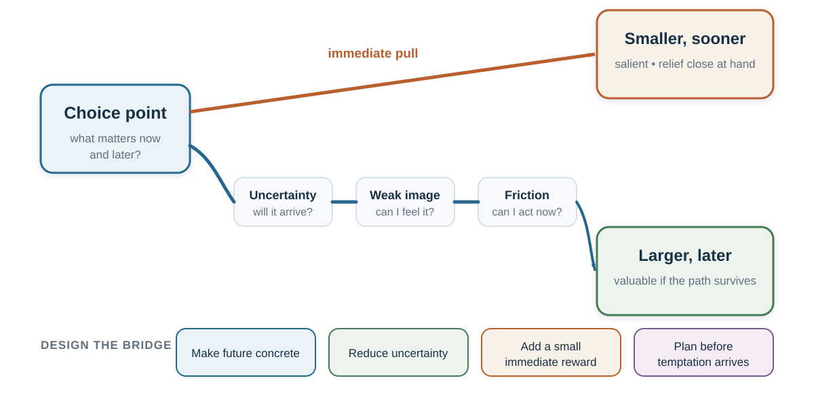

19 Intertemporal Choice: Why Later Loses to Now
A delayed outcome is not merely a smaller version of an immediate one. Delay changes attention, uncertainty, emotion, imagination, and who the future beneficiary feels like.
Learning goals
- Use discounted utility as a benchmark for choices over time.
- Explain present bias, preference reversal, and commitment devices.
- Distinguish time preference from uncertainty, liquidity constraints, utility curvature, and context.
- Diagnose magnitude, sign, date–delay, hidden-zero, and domain effects.
- Redesign a delayed-benefit choice without moralizing the chooser.
Opening puzzle: patient tomorrow, impatient today
Choose between €100 today and €120 in one month. Now choose between €100 in twelve months and €120 in thirteen months.
Many people are more willing to wait in the second choice than in the first. Yet both require waiting one additional month for the same additional €20. The distant self plans to be patient; the present self sees an immediate reward and reverses the plan.
This puzzle appears in ordinary life. On Sunday, a student plans to begin on Monday; on Monday, starting tomorrow feels almost as good. A person intends to save the next pay increase, then finds the immediate purchase unusually compelling when the money arrives. A team agrees that a difficult conversation should happen soon, yet postpones it each time “soon” becomes today. A government values long-run resilience but repeatedly protects the next budget cycle.
Calling these choices “impatient” describes the result but does not yet explain it. What changed when the reward became immediate? Did value change, attention narrow, uncertainty grow, identity shift, or an immediate discomfort become more important? Intertemporal choice belongs in this book because it makes the whole decision architecture visible.
The benchmark: value across time
The discounted-utility model represents a stream of outcomes by reducing the present weight of outcomes that arrive later (Samuelson, 1937). In a simple exponential form,
\[ U = \sum_{t=0}^{T} \delta^t u(c_t), \qquad 0 < \delta \leq 1. \]
Here, \(u(c_t)\) is the utility of consumption or another outcome at time \(t\), and \(\delta\) is the weight placed on each additional period of delay. Exponential discounting has an attractive property: the relative ranking of two future outcomes remains stable as time passes. If €120 in thirteen months is preferred to €100 in twelve months, moving both rewards eleven months closer should not reverse the preference.
The benchmark is useful even when it is not descriptively accurate. It forces a decision-maker to state the outcome stream, time horizon, assumptions, and trade-off between present and future. It also separates two ideas that ordinary language blends:
- Utility curvature: an additional €100 may matter less to a wealthy person than to someone who cannot pay rent.
- Time weighting: the same valued outcome may receive less weight because it arrives later.
Observed choices usually identify neither component cleanly. A person choosing money today may be impatient, cash-constrained, worried that the promise will not be honored, or facing an urgent need whose marginal value is high. Frederick, Loewenstein, and O’Donoghue (2002) therefore warn against treating every implied discount rate as pure time preference.
Present bias and preference reversal
Exponential discounting treats each added period proportionally. Human choices often display declining impatience: the difference between now and soon feels larger than an equal difference between two distant dates. Hyperbolic models capture this pattern by making the implied discount rate fall with delay (Ainslie, 1975). Quasi-hyperbolic models simplify it into a special penalty for anything not immediate, followed by more regular discounting across later periods (Laibson, 1997).
The important psychological result is dynamic inconsistency. A plan that looks best from a distance can lose when temptation or effort becomes immediate. O’Donoghue and Rabin (1999) show how present bias can produce two familiar failures:
- procrastination: an action has an immediate cost and delayed benefit, so the person repeatedly postpones it;
- premature indulgence: an action has an immediate reward and delayed cost, so the person repeatedly brings it forward.
These are mirror images. Filing a form, exercising, studying, saving, or beginning a difficult conversation imposes cost now for benefit later. Scrolling, impulsive spending, avoiding conflict, or consuming an addictive reward offers relief now while moving cost into the future.
A person can also differ in awareness. A sophisticated present-biased chooser anticipates future reversal and seeks a commitment device. A naïve chooser expects future intentions to survive unchanged. A partly sophisticated chooser knows there is a problem but underestimates its size.
Commitment devices change the future option set or price before the tempting state arrives: automatic savings, a deposit contract, a deadline, an app blocker, a preordered healthy meal, a written reservation value before bargaining, or an appointment with another person. Commitment can protect a valued plan, but it can also become punitive or coercive. A good device is proportionate, transparent, and recoverable after a lapse.
Delay changes more than value

Waiting is rarely just empty time. Delay changes at least six parts of the choice:
| Mechanism | Diagnostic question | Example |
|---|---|---|
| Immediate salience | Which outcome can be felt or imagined now? | The taste of dessert competes with an abstract health benefit. |
| Uncertainty | Will the later outcome arrive, and can the promise be trusted? | An unstable employer promises a future bonus. |
| Liquidity and need | What urgent constraint changes marginal value today? | Cash now prevents a late fee or missed meal. |
| Subjective time | How long does the interval feel? | “In six months” feels different from a calendar date. |
| Future-self continuity | Does the later beneficiary feel like me? | Retirement saving can feel like giving money to a stranger. |
| Anticipatory emotion | Is waiting filled with savoring, dread, anxiety, or relief? | Delaying a holiday can create pleasure; delaying a medical result can create dread. |
This table changes the intervention. If the barrier is distrust, a vivid future-self exercise will not repair it. If the barrier is liquidity, a lecture on patience is insulting and ineffective. If the delayed outcome is abstract, making it concrete may help. If the immediate action is too difficult, reduce friction. If a person repeatedly reverses a considered plan, commitment may be useful.
Preferences change with amount, sign, wording, and domain
There is no single discount rate that travels unchanged across every choice. Several recurring patterns show that time preferences are partly constructed.
Larger outcomes often receive more patience
People commonly discount small rewards more steeply than large rewards—the magnitude effect (Thaler, 1981). Someone who refuses to wait for €10 may wait for €10,000 even when the proportional return is the same. Larger stakes can justify fixed waiting costs, attract more attention, or invite more deliberate comparison. The pattern warns against estimating a person’s general patience from one small hypothetical choice.
Gains and losses are not temporal mirror images
Delayed gains are often discounted differently from delayed losses. People may be impatient to receive a gain yet willing to postpone a payment. But waiting for a negative outcome can also generate dread, making sooner resolution preferable. The sign effect therefore depends on framing, anticipation, and domain rather than expressing one universal taste for delayed losses (Loewenstein & Prelec, 1992; Weber et al., 2007).
Dates and delays create different representations
“In six months” emphasizes waiting. “On February 12” locates an event in a calendar and may make it more concrete. Read and colleagues (2005) found lower discounting when outcomes were described with dates rather than delays. This is not a magical wording rule. A calendar date helps only when it makes the future more recoverable and does not conceal material uncertainty.
The invisible zero can be made visible
The choice “€100 today or €120 in a month” hides two complete outcome streams. The fuller representation is:
- €100 today and €0 in one month, or
- €0 today and €120 in one month.
Making both zeros explicit increased selection of delayed rewards in the hidden-zero studies (Magen et al., 2008). The mechanism connects directly to opportunity-cost neglect: the immediate reward is not free; it replaces a later reward. A fair design can reveal the full stream without pretending that the later option must be chosen.
Money, health, environment, effort, and relationships differ
Money is tradable and often measurable. Health, pain, environmental quality, effort, and social trust are not interchangeable bank balances. People may discount across domains differently because uncertainty, irreversibility, emotion, identity, and moral meaning differ (Chapman, 1996; Hardisty & Weber, 2009).
A monetary task therefore cannot automatically supply the discount rate for preventive medicine or climate policy. Nor should a patient who rejects a delayed health benefit be treated as displaying one stable defect. The decision may involve side effects now, uncertain benefit later, caregiving burden, trust in the institution, or values the experiment did not measure.
The future must become believable and self-relevant
Delayed outcomes often lose because they are represented poorly. The immediate reward is sensory and specific; the future reward is verbal and vague. Episodic future thinking asks people to imagine a personally relevant future event connected to the delayed outcome. Peters and Büchel (2010) found that individualized future-event cues reduced delay discounting in their task, with the vividness of episodic imagination predicting the change. The result supports a mechanism, not a universal recipe: making a future concrete can increase its present decision weight.
Future-self continuity offers a related account. If the person at age sixty-five feels psychologically remote, saving can resemble sacrifice for someone else. People who report or display stronger connection to their future selves tend to value delayed outcomes more (Ersner-Hershfield et al., 2009; Hershfield, 2011). A responsible application does not rely on an aging image as a trick. It connects a future goal to present identity, concrete milestones, and a feasible action.
Subjective time also matters. Calendar structure, temporal landmarks, and imagined events can change how long a delay feels. Zauberman and colleagues (2009) found that nonlinear perception of time contributes to observed discounting. Again, the lesson is diagnostic: a distant future may be undervalued because it feels both far away and poorly represented.
Scarcity and trust: when now is rational
Impatience is often moralized as weak self-control. That interpretation ignores the environment.
If income is unstable, a promised future reward may be risky. If institutions have broken promises, trust should be lower. If a person faces urgent needs or expensive debt, money today can have much higher marginal value. If inflation or political instability threatens future purchasing power, waiting changes the outcome itself. If a medical condition can deteriorate, delay may be dangerous.
Scarcity can also capture attention and impose cognitive load, but it should not be used to portray people with fewer resources as inherently worse decision-makers (Mani et al., 2013; Mullainathan & Shafir, 2013). Carvalho, Meier, and Wang (2016) found that some aspects of economic decision-making vary with short-run resource availability around payday. The larger lesson is that measured patience can partly reflect constraints and the reliability of the future.
Before prescribing self-control, ask:
- Is the later outcome actually more valuable after risk, inflation, and access are considered?
- Can the chooser afford to wait?
- Has the institution earned trust?
- Can a partial or staged option protect both present need and future benefit?
Patience becomes easier when the future is credible.
Design the bridge, not only the destination
A delayed benefit needs a path that can survive present attention and motivation. The following tools intervene at different mechanisms:
- Reveal the complete stream. Show what happens now and later under every option, including zeros and opportunity costs.
- Use concrete dates and events. Link the action to a calendar point and a personally meaningful future situation.
- Create an immediate bridge reward. Give prompt feedback, visible progress, social support, or a small compatible pleasure while protecting the delayed objective.
- Shrink the first action. A future benefit cannot motivate an action that is currently infeasible.
- Precommit selectively. Arrange the option set before the hot state arrives; preserve a safe recovery path.
- Reduce uncertainty. Use guarantees, staged payments, transparent milestones, escrow, or credible institutions where distrust is the real barrier.
- Change the environment. Automate saving, remove salient temptations, make the next study step visible, or schedule the difficult conversation.
- Review predictions. Compare what the immediate action promised with what it delivered, and what waiting promised with what actually arrived.
Temptation bundling illustrates an immediate bridge: combine a “want” available now with a “should” that produces delayed benefit, such as listening to a desired audiobook only while exercising (Milkman et al., 2014). It works only when the bundle remains controlled and the added reward does not undermine the goal.
Worked application: saving from the next pay increase
“I should save more” leaves the future to compete with every present cue. Diagnose the path:
- Prediction: How stable is income? What emergencies are plausible? What return and inflation assumptions are defensible?
- Valuation: Which present needs and future goals matter? What minimum liquidity must be protected?
- Present bias: Is the person likely to reverse the plan when money becomes available?
- Architecture: Can a contribution begin automatically with the next raise while leaving an accessible emergency fund?
- Feedback: Can progress be shown in future monthly income or a concrete goal rather than only an account balance?
- Ethics: Are fees, risks, lock-in, and exit legible?
The design does not tell every person to maximize delayed consumption. It makes a considered trade-off more likely to survive the moment when the immediate alternative becomes vivid.
Worked application: a difficult conversation
A manager plans to address a recurring problem but delays because discomfort is immediate and relationship improvement is uncertain. A date-and-time plan reduces repeated renegotiation: “At Tuesday’s one-to-one, after reviewing current work, I will describe the observable pattern and ask for their view.” A brief script reduces ability cost. Warm-honesty language makes the immediate action safer. A review date turns the conversation into a test rather than a verdict.
Here, the delayed reward is not money. It is trust and a more workable relationship. The same architecture applies.
Ethics: whose future is being protected?
Institutions often ask individuals to bear costs now for collective or delayed benefits. That can be justified, but the distribution matters. A policy that celebrates patience while shifting present hardship onto people with the least liquidity is not neutral. Nor is a dark pattern that exploits present bias to sell credit, subscriptions, gambling, or addictive engagement.
Ethical intertemporal design asks:
- Who receives the immediate benefit and who bears the delayed cost?
- Is the future outcome credible, measurable, and fairly distributed?
- Does commitment protect the chooser’s considered goal or the designer’s revenue?
- Is exit meaningful, and what happens after a lapse?
- Are immediate needs being treated as moral weakness rather than real constraints?
The goal is not to make later always defeat now. It is to make the whole time path visible enough that a person or institution can choose it deliberately.
Key ideas
- Discounted utility is a useful benchmark, but observed discounting combines time preference with utility, uncertainty, liquidity, framing, and context.
- Present bias can produce procrastination, premature indulgence, and preference reversals as an outcome becomes immediate.
- Magnitude, sign, date–delay wording, hidden zeros, and domain change temporal choice; patience is partly constructed.
- A delayed outcome gains weight when it becomes concrete, credible, self-relevant, feasible, and connected to immediate feedback.
- Choosing now can be adaptive under scarcity, distrust, or urgent need; diagnosis should precede moral judgment.
- Commitment devices and architecture should protect informed goals, proportionality, meaningful exit, and recovery.
Study and practice
- Give three explanations for choosing €100 today over €120 in one month that are not “impatience.”
- Describe one preference reversal in study, work, consumption, health, or relationships.
- Rewrite one intertemporal choice so that both outcome streams and their hidden zeros are visible.
- When would a commitment device expand agency, and when would it become coercive?
- Compare a monetary delayed reward with a health or environmental outcome. Which mechanisms differ?
- Diagnose whether one present-focused choice reflects salience, uncertainty, liquidity, subjective time, future-self distance, or anticipated emotion.
References cited in this chapter
Ainslie, G. (1975). Specious reward: A behavioral theory of impulsiveness and impulse control. Psychological Bulletin, 82(4), 463–496.
Carvalho, L. S., Meier, S., & Wang, S. W. (2016). Poverty and economic decision-making: Evidence from changes in financial resources at payday. American Economic Review, 106(2), 260–284.
Chapman, G. B. (1996). Temporal discounting and utility for health and money. Journal of Experimental Psychology: Learning, Memory, and Cognition, 22(3), 771–791.
Ersner-Hershfield, H., Wimmer, G. E., & Knutson, B. (2009). Saving for the future self: Neural measures of future self-continuity predict temporal discounting. Social Cognitive and Affective Neuroscience, 4(1), 85–92.
Frederick, S., Loewenstein, G., & O’Donoghue, T. (2002). Time discounting and time preference: A critical review. Journal of Economic Literature, 40(2), 351–401.
Hardisty, D. J., & Weber, E. U. (2009). Discounting future green: Money versus the environment. Journal of Experimental Psychology: General, 138(3), 329–340.
Hershfield, H. E. (2011). Future self-continuity: How conceptions of the future self transform intertemporal choice. Annals of the New York Academy of Sciences, 1235(1), 30–43.
Laibson, D. (1997). Golden eggs and hyperbolic discounting. Quarterly Journal of Economics, 112(2), 443–477.
Loewenstein, G., & Prelec, D. (1992). Anomalies in intertemporal choice: Evidence and an interpretation. Quarterly Journal of Economics, 107(2), 573–597.
Magen, E., Dweck, C. S., & Gross, J. J. (2008). The hidden-zero effect: Representing a single choice as an extended sequence reduces impulsive choice. Psychological Science, 19(7), 648–649.
Mani, A., Mullainathan, S., Shafir, E., & Zhao, J. (2013). Poverty impedes cognitive function. Science, 341(6149), 976–980.
Milkman, K. L., Minson, J. A., & Volpp, K. G. M. (2014). Holding the Hunger Games hostage at the gym: An evaluation of temptation bundling. Management Science, 60(2), 283–299.
Mullainathan, S., & Shafir, E. (2013). Scarcity: Why having too little means so much. Times Books.
O’Donoghue, T., & Rabin, M. (1999). Doing it now or later. American Economic Review, 89(1), 103–124.
Peters, J., & Büchel, C. (2010). Episodic future thinking reduces reward delay discounting through an enhancement of prefrontal-mediotemporal interactions. Neuron, 66(1), 138–148.
Read, D., Frederick, S., Orsel, B., & Rahman, J. (2005). Four score and seven years from now: The date/delay effect in temporal discounting. Management Science, 51(9), 1326–1335.
Samuelson, P. A. (1937). A note on measurement of utility. Review of Economic Studies, 4(2), 155–161.
Thaler, R. H. (1981). Some empirical evidence on dynamic inconsistency. Economics Letters, 8(3), 201–207.
Weber, E. U., Johnson, E. J., Milch, K. F., Chang, H., Brodscholl, J. C., & Goldstein, D. G. (2007). Asymmetric discounting in intertemporal choice: A query-theory account. Psychological Science, 18(6), 516–523.
Zauberman, G., Kim, B. K., Malkoc, S. A., & Bettman, J. R. (2009). Discounting time and time discounting: Subjective time perception and intertemporal preferences. Journal of Marketing Research, 46(4), 543–556.